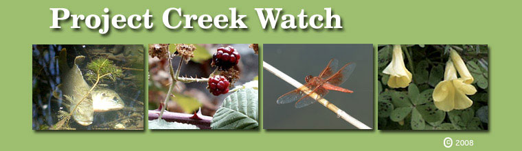
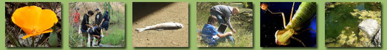

Welcome To Project
Creekwatch!
  Project
Creek Watch, started in the Fall of 1994, is a long term scientific
study of the Arroyo Del Valle "Creek" located in
the city of Pleasanton,
California. This project is sponsored & coordinated by
the Amador
Valley High School Science Department which is part of
the Pleasanton Unified
School District. It was awarded the prestigious California
Golden Bell Award for excellence in education in 1999. Project
Creek Watch, started in the Fall of 1994, is a long term scientific
study of the Arroyo Del Valle "Creek" located in
the city of Pleasanton,
California. This project is sponsored & coordinated by
the Amador
Valley High School Science Department which is part of
the Pleasanton Unified
School District. It was awarded the prestigious California
Golden Bell Award for excellence in education in 1999.
The
goal of the project is to provide field experience opportunities
for Amador science students while at the same time support efforts
in transforming the "creek" channel into an environment
that is respected, enjoyed, and maintained by the Pleasanton
Community. It is critical that we understand that how we treat
this watershed effects what is downstream from it and ultimately
the marine environment. The web site
will hopefully act as inspiration to other organizations to initiate
similar habitat reclamation projects and promote a heightened
level of concern about the "Land Sea" connection. We
all need to work together to reclaim all that has been overlooked
or forgotten and stop the flow of toxics into our oceans. We
must recognize that habitat protection and stable biologically
diverse ecosystems must be a priority. Our children and children's
children are depending on it.
 Visiting
the creek site requires a short walk from my classroom. We typically
will get there and back in a single class period. While at the
study site, Amador students assess water quality by collecting
chemical measurements, capturing indicator species, and making
qualitative observations regarding the abundance and distribution
of flora and fauna. Grant money provided by the Amador Parent
Teacher Student Association, Pleasanton
Partners In Education and the Tri
Valley Community Fund have enabled us to purchase the necessary
tools to collect, store, and display what we have found. Significant
changes have been observed over the years and fortunately
most have been positive. Recently the city has followed our lead
and began introducing native plant species accompanied by wire
to protect the plants from deer and irrigation to sustain the
young plants during the summer. We envision that one day the
Arroyo Del Valle "creek" will be a place where members
of the Pleasanton community will enjoy bringing their children
to observe and appreciate an abundance of wildlife. Visiting
the creek site requires a short walk from my classroom. We typically
will get there and back in a single class period. While at the
study site, Amador students assess water quality by collecting
chemical measurements, capturing indicator species, and making
qualitative observations regarding the abundance and distribution
of flora and fauna. Grant money provided by the Amador Parent
Teacher Student Association, Pleasanton
Partners In Education and the Tri
Valley Community Fund have enabled us to purchase the necessary
tools to collect, store, and display what we have found. Significant
changes have been observed over the years and fortunately
most have been positive. Recently the city has followed our lead
and began introducing native plant species accompanied by wire
to protect the plants from deer and irrigation to sustain the
young plants during the summer. We envision that one day the
Arroyo Del Valle "creek" will be a place where members
of the Pleasanton community will enjoy bringing their children
to observe and appreciate an abundance of wildlife.
 Use
the links in the navigation bar shown above to learn more about
the Arroyo Del Valle, the Data that Amador students collect while
at the study site, view images of some of the many organisms
that can be found there, view images or take a virtual tour of
the main study areas, enjoy some of the more beautiful images
captured on camera, or marvel at some of the many research endeavors
initiated by my students. The navigation bar is present on every
page in the web site and should enable you to move in and around
the site with ease. Use
the links in the navigation bar shown above to learn more about
the Arroyo Del Valle, the Data that Amador students collect while
at the study site, view images of some of the many organisms
that can be found there, view images or take a virtual tour of
the main study areas, enjoy some of the more beautiful images
captured on camera, or marvel at some of the many research endeavors
initiated by my students. The navigation bar is present on every
page in the web site and should enable you to move in and around
the site with ease.
We
hope this web site will encourage you to visit the study area
and become an active participant in the revitalization and beautification
of this wonderful Pleasanton ecosystem. While there, if you see
any Endangered Species or
acquire information that may assist us in our research please
e-mail ethiel@pleasanton.k12.ca.us.
This
web site was created and is maintained by Eric
Thiel, co-founder of the project. He has been a member of
the Amador Science department since 1992.

| Copyright © 2008
Amador Valley High. All Rights Reserved. Reproduction in
whole or in part in any form or medium without express
written permission of Amador Valley is prohibited. |
|